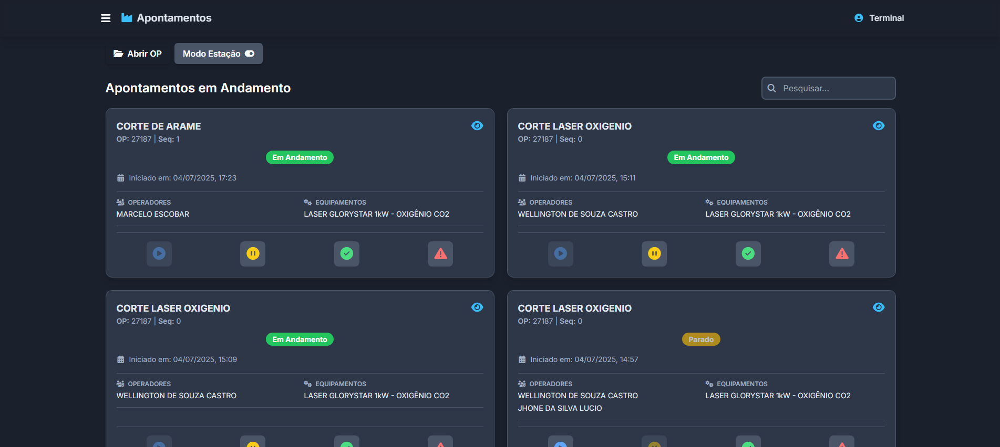
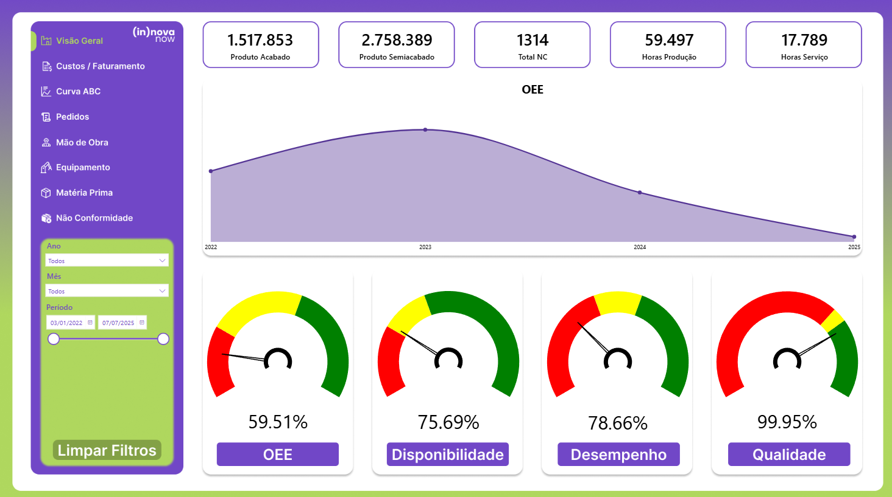

Olá! Meu nome é Matheus Costa Peixoto, tenho 25 anos e sou um profissional apaixonado por tecnologia. Atualmente, trabalho com análise de dados na Demac Indústria de Peças Agrícolas, onde foco na análise de produção para otimizar os processos de chão de fábrica. Nas horas vagas, meus hobbies são pescar, ler e jogar.
Matheus Costa Peixoto
Técnico em Informática & Analista de Dados
Formação Educacional
Análise e Desenvolvimento de Sistemas
Cursando
Técnico em Informática
ETEC Elias Nechar (Integrado ao Ensino Médio)
Idiomas
Inglês (Básico)
Portfólio

Microsserviço de Controle de Produção
Desenvolvimento de um microsserviço utilizando o framework Django (Python) para realizar o controle de apontamentos e gestão do chão de fábrica.
Django Python API REST HTML CSS JavaScript

Relatório de Análise de Dados
Criação de um dashboard interativo em Power BI para visualização e análise de dados de produção.
Power BI DAX SQLContato
Tem alguma pergunta ou deseja uma cotação ?